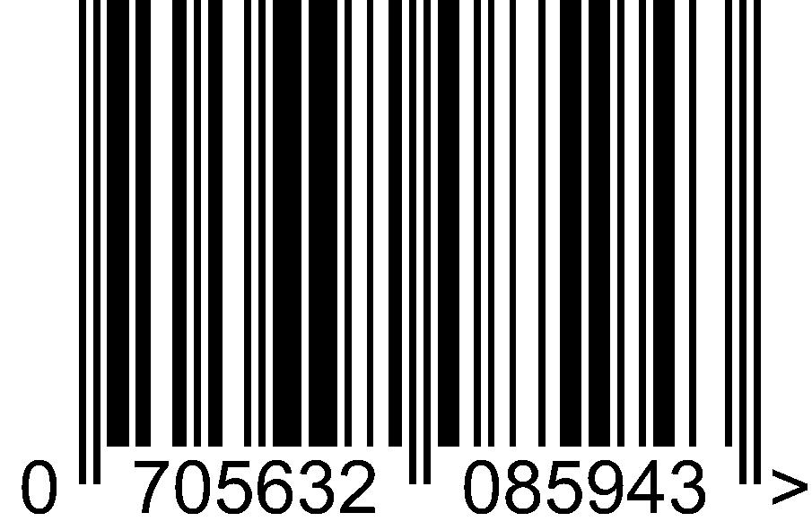

<video id="player" controls width="400" autoplay></video>
<button id="capture">Capture</button>
<canvas id="snapshot" width="400" height="225"></canvas>
</img>
<button id="detect">Detect</button>
<pre id="result" ></pre>More details in Console
<script>
  var player = document.getElementById('player');
  var snapshotCanvas = document.getElementById('snapshot');
  var captureButton = document.getElementById('capture');
  var img = document.getElementById('img');
  var result = document.getElementById('result');
  var detectButton = document.getElementById('detect');

  if (window.BarcodeDetector == null) {
    alert('BarcodeDetector is not defined!')
  }

  var handleSuccess = function(stream) {
    // Attach the video stream to the video element and autoplay.
    player.srcObject = stream;
  };

  captureButton.addEventListener('click', function() {
    var context = snapshot.getContext('2d');
    // Draw the video frame to the canvas.
    context.drawImage(player, 0, 0, snapshotCanvas.width,
        snapshotCanvas.height);

    snapshotCanvas.toBlob(blob => {
      img.src = window.URL.createObjectURL(blob)
    })

  });

  detectButton.addEventListener('click', () => {
    if (window.BarcodeDetector == null) {
      alert('BarcodeDetector is not defined!')
    }

    let codeReader = new BarcodeDetector()
    codeReader.detect(img).then(codes => {
      console.log(codes)
      result.innerHTML = JSON.stringify(codes.map(x => x.rawValue), null, 2)
    })
  })

  navigator.mediaDevices.getUserMedia({video: true})
      .then(handleSuccess);
</script>
